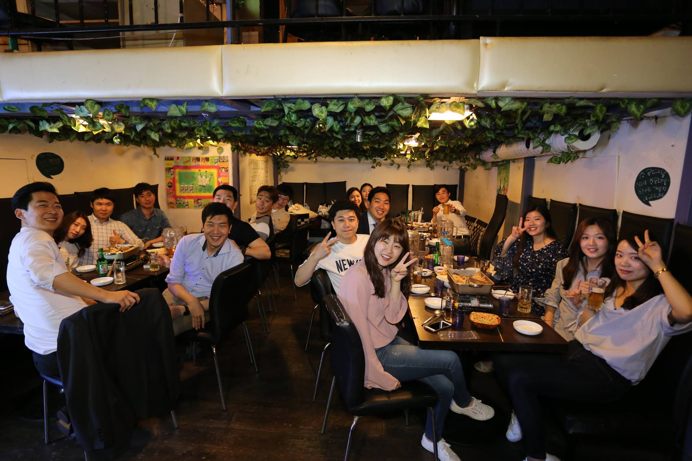
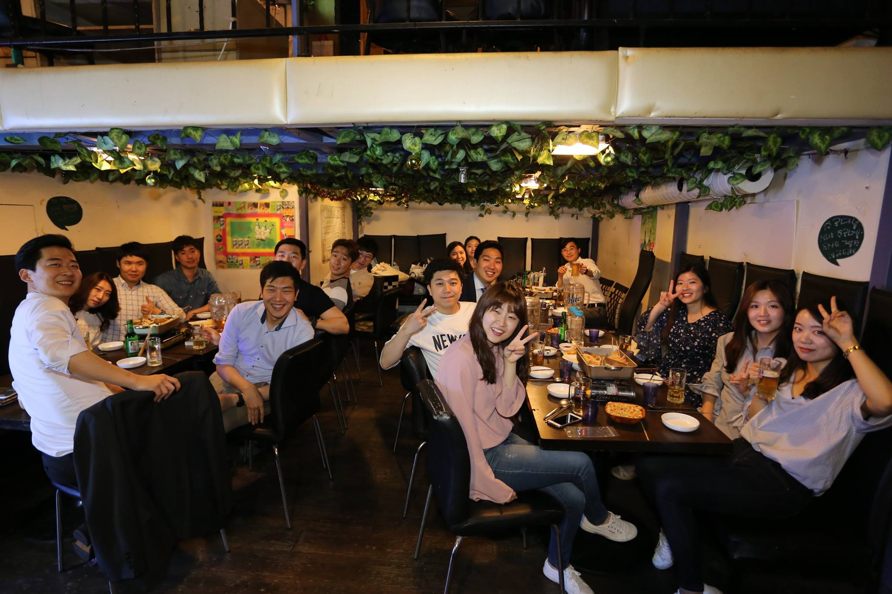

1977년 동문회 창립 및 총회 개최
1980년 소식지 창간
1980~1988년 이건창(46입) 1대 동문회장 역임.
1989년 안종범(55입) 2대 동문회장 선출. 장학금 모금과 회원주소록
1991년 손정웅(58입) 3대 회장 선출
1999년 이형창(58입) 4대 회장 선출
2001년 구자철(59입) 5대 회장 선출. 실습실 컴퓨터 기증
2003년 이수근(62입) 6대 회장 선출
2005년 민성식(64입) 7대 회장 선출
2007년 김성진(65입) 8대 회장 선출
2010년 안두환(67입) 9대 회장 선출
2012년 김기백(56입) 10대 회장 선출
2014년 임재철(71입) 11대 회장 선출
1977년 10월 20일
연세대학교 문헌정보학과 동창회 창립총회 명동 한일관에서 개최!
첫 졸업생을 배출한 지 30년 가까이 지나서야 동문회 모임이 공식적으로 활동을 시작한 것. 회칙 제정, 상임임원 선출 등 조직적인 동문회를 꾸려 나가기로 굳게 결의하였습니다.
최초 도원결의에 가담하신 분들은 이미 고인이 되신 이봉국 교수님(46입)을 필두로 안종익 동문(55입), 손한 동문(58입), 조신권 동문(58입), 봉두완 동문(56입), 오혜령 동문(61입) 등 후배동문들의 귀에도 익은 많은 선배 동문들. 당시에도 장학기금 모금과 장학금 수여, 동창회보 발간, 동문 주소록 작성 등이 가장 큰 사업이었고, 그 외에 정년퇴임하시는 노교수님들을 위한 논문집 발간 및 축하연도 했답니다.
요즘의 Website 같은 공동의 의사전달매체가 없었던 터라 창립총회 이듬해인 1975년 12월 19일 상임위원회에서 동창회보를 발간하기로 결의하고, 1976년에 그 첫 호를 발간하였습니다. 비록 1년에 한 번씩 3~5쪽 분량에 불과했으나 동문들 간의 소식을 전하고 공감대를 형성하는 데는 큰 몫을 담당했고, 동문회지는 동문회 소식, 기별소식, 동문들의 개인 동정 등을 세세하면서도 재미있게 전달하여 마치 한 가족의 정담을 엮어낸 것 같은 훈훈함으로 가득 차 있었습니다.

 
